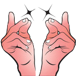

There is a lot of overlap between Software Engineering and Computer Science. Generally speaking, science focuses on understanding the world in the present, while engineering focuses on creating for the future. Many of our graduates study Computer Science in college, and then become Software Engineers.
You will learn many tools and languages in SEP. But the point of this program is actually not to learn Github or Javascript, or even to be a programmer. The point of SEP is to equip you with a strong set of skills that will be useful anywhere.
The HSTAT SEP Honor Code is a declaration by the entire community to strive for excellence in scholarship and in character. The Honor Code establishes trust among students, teachers, and staff that enriches collaboration. It deepens bonds between students and encourages a sense of personal responsibility that extends beyond the classroom.
The Expos and Showcase take place in the Spring to show off work that students have made throughout the year.
Starting in 10th grade, SEP students begin using Slack.
Slack is an awesome communication tool used by many companies (we've seen it open on screens during every field trip we've been on). It's basically a bunch of private customizable group chats (called “channels”), but with way more functionality (tags, search, code snippets, etc). It is very helpful for collaboration and debugging (and general announcements/chat), and much more efficient/streamlined than email. There is a mobile app (with plenty of customizable push-notification settings) as well as a desktop app (and it also works in the browser). It is a great communication tool for both student-to-student and student-to-teacher conversations. It is also a good experience for students because it could possibly be used during college/careers. Students are added to the following channels:
PUBLIC channels (open to EVERYONE in the HSTAT SEP group) for the following:
A PRIVATE channel just for students in the same cohort/grade (and their teachers):
Students can also direct message their teacher (or anyone) on Slack with specific questions. But if you think someone else might have the same question, make sure to post it in the proper channel (that way they can see the answer)!
Students are added to Slack via their HSTAT email address (for this reason, students should be checking their email!). Every student's username should be the same as their HSTAT email address, just without the “@hstat.org” (i.e. johnd1234). Slack can be used on smartphones and/or the computer.
Remember, there are dozens of people in each channel. If Person A has a question, they want everyone to get a notification (otherwise they might not see it). Person B might answer Person A’s question, and they may have a conversation back-and-forth about it. The benefits of posting in a channel (rather than directly messaging someone) is 1) to cast a wider net of people who can help you, and 2) that Person C might have the same question as Person A did. They can go back later and see all of the help that was given between Person A and Person B. However, it would probably be annoying to everyone else in the channel if every single message triggered a notification. For that reason, there are specific alert triggers:
@channel in a message@channel and you post between 8:01am-9:59pmAs a recap, here is when you should/shouldn’t use @channel:
@channel@channel@usernameIf you have a smartphone, you’re going to want to install the Slack app on your phone. This is the best way to ensure you see the notifications. But often times your reply requires being at a computer (typing a long message, needing to pull up your own program, etc). Refer to the links above for using Slack on a computer.
Which channel do I post in?
How to respond
:snaps: to use our custom  emoji!Styling tips
function
```div {
color: red;
}```
div {
color: red;
}
Stands for Minimum Viable Product
Minimum = the least
Product = what you make
Viable = it works
Essentially, it's the least you can make that works. Here's a diagram to help understand the concept.
The top part of the image shows one way to build a car: work towards the end goal piece by piece, work on each piece until it is perfect, and then put the pieces together at the end. The problem with this approach is that the transportation device is completely unusable until the last step.
Unfortunately, this is often what happens in students' projects. A student has a vision for their end product, and starts working on it piece by piece. For example, when working towards a website, a student will spend too much time working on the navigation bar until it is perfect. However, if they run out of time, they have a FANTASTIC looking navigation bar that it NOT functional because there is no more website for the buttons to link to.
The bottom part of the image shows a better approaching to building a car. If the goal of a car is to transport someone from Point A to Point B, consider the MVP: the least you can make that works -- in this case, a skateboard! Sometimes it takes longer than you would think to build a car, and so a skateboard isn't as flashy, but at least it gets the job done.
Similarly for students, the MVP approach is much more realistic when considering deadlines. Though you may dream of a "car," what is the "skateboard?" What is the least you can make that works? In the example of the student building a website, perhaps they spend less time making the navigation bar have the exact size/spacing/colors, and just get it to work -- meaning, also spending time on other parts of the website that the navigation bar can then lead to! Once a simple, functional website is built (like the skateboard), then they can add on to it (like adding a handlebar to a skateboard, making it a scooter) and work towards the "car" vision as time allows.
A good practice is to set an "MVP" deadline before the final deadline. This is a good practice to take with you after high school, so that you are not procrastinating and trying to make a usable project/essay at the last minute. Instead, you are creating an MVP in advance of the due date, and then giving yourself time to make it perfect.
The great thing about the MVP workflow is that it applies to any project, even outside of code: essays, applying to college, etc!
The purpose of the portfolio is to display a student's best work.
URLs:
A stand-up meeting is usually conducted in workplaces each morning to ensure that a team is checking in regularly about their progress.
As a part of HSTAT SEP, we will sometimes conduct stand-ups (either whole-class or small groups) to allow you to do the same. They usually consist of answering the following questions:
Doing stand-ups helps:
A few basic principles:
Other resources:
The goal is that each grade gets to go on at least one field trip each year. In the past, we've visited places such as Google, Deloitte, New Lab, Stash, and the NYC CS Fair. We also conduct in-house workshops with companies such as PENCIL and Deloitte.
In order to best prepare for any field trip, please review vocabulary.
PENCIL & Deloitte Partnership
Making a website with Github Pages
index.html filemain (or master)username.github.io/reponameindex.htmlusername.github.io/reponame/filename.htmlGithub Classroom Assignments
Often times when we get stuck programming, we ask for help. In the process of doing so, we explain our problem out loud, and frequently the solution comes to us in the middle of explaining. So instead of explaining to a person, try talking to a rubber duck first.
After students finish SEP11, there are two 12th-grade SEP options:
More results on Google.
That really depends on your situation:
Here you will find many vocabulary terms related to computer science and software engineering.
Click to flip a card
Emphasis on theory. Often focuses on foundations of computing including algorithms, programming languages, theories of computing, artificial intelligence, and hardware design.
Emphasis on application. Overlaps with computer science, but often focuses on solving real-world problems by creating software.
A place where a programmer typically does their coding. Usually includes a text editor, and often a file tree and debugger (like cloud9).
The visual side of a website or web application. Responsible for user interface. You can use the browser's inspector tools to look at the front end code (HTML, CSS, JS).
The "behind-the-scenes" side of an application. Responsible for data interaction. This code is hidden to the user.
Both front end and back end.
The three sections of most web applications.
Model = back end
View = front end
Controller = middleman
A place where programmers share the code of their projects in an "open-source" fashion where others can distribute and contribute to each others' code. Versions of the code is managed by Git, a version-control system that keeps "snapshots" of files.
A computer that is primarily a hard drive and network card. Used for public retrieval of information. Used for website and other data storage.
The place where data/sites/software lives, often on 1 or multiple servers.
The virtual location of a computer or server. Usually a string of numbers.
The link/address to a website. Usually a string of text.
An online resource where anyone can ask and answer questions, often relating to computer programming. Questions and answers are up-ranked by users so that the best responses show near the top.
A relatively new business. Often has fewer members who have a wide range of skills, such as being full-stack developers. On the other hand, larger companies often have employees who focus on a smaller range of skills.
An industry of related careers (ex: the software engineering field, the field of medicine, etc).
The highest-ranking person in a company or other institution, ultimately responsible for making managerial decisions.
A text-based way to interact with a computer or server. Often used for manipulating and running files.
Similar to a Command Line Interface, but uses intuitive gestures with icons instead of text-based commands. Also limited in capabilities compared to the CLI.
A.k.a. object-oriented programming. A data type where each object has both methods (functions/actions) and properties (descriptions).
A set of routines, protocols, and tools for building software applications. Often used to give access from one software application to another (ex: Google Maps being used in other software).
Keeping your code "dry" means you're not copying/pasting, but rather making your code more efficient.
A "step". Usually referred to going through a loop. Could be in the context of a computer program, or a step of a process (ex: "Apple is about to release the next iteration of the iPhone").
How the front end looks and how the user interacts with pages and visual elements like colors, buttons, and icons.
How the user experiences a product or application based on the process they go through to discover it, the sequence of actions in interacting with it, and their thoughts, feelings, and impressions during/after the experience.
Often used in reference to internet/server speed. Think of it as the number of lanes on a highway.
Analog has a range of values (like a knob: 0-127). Digital has discrete values (like a lightswitch: on/off).
An information space where documents and other web resources are identified by URLs.
An international community that develops open standards to ensure the long-term growth of the Web.
The company that provides internet to a building (ex: Spectrum, Verizon FiOS, Comcast).
Usually run by your ISP and matches URLs to IPs.
A set of instructions for distributing data. HTTP is the foundation of data communication for the World Wide Web.
Similar to HTTP; the "s" stands for "secure" which makes sure all communications between your browser and the website are encrypted. Sometimes webpages require external sources are loaded via HTTPS (if you get an error with "http", just add the "s" to the URL).
Convert the code into something that the machine can interpret.
Language responsible for content of a website.
Language responsible for style of a website.
Front end programming language responsible for interactivity and modifying content/style.
A programming language that allows users to play online games, chat with people around the world, calculate a mortgage interest, view images in 3D, etc. Android is written in Java.
A highly-readable backend programming language often used for data-heavy applications.
A highly-readable backend programming language often used for building web applications.
Pronounced "sequel." Used for creating and manipulating databases. Comes in different variants (sqlite3, mysql, etc).
Similar to "question." Often something you search for in a database (ex: all Amazon products with "headphones" in the title and has 5 stars).
Complex programming languages used for creating heavy-duty software and operating systems.
The software that runs at the root of the computer and allows other software to run.
Often runs the Microsoft Windows OS.
Made my Apple, often runs macOS.
The "brain" of a computer that makes computations and carries out algorithms (steps).
Like a "short-term" memory for quick retrieval.
Like a "long-term" memory for archiving data.
A type of hard drive with no moving parts. Works much faster than a standard hard drive.
Short for "binary digit." The smallest unit of information stored by a computer. Either a 0 or 1.
8 bits.
1024 bytes.
1024 kilobytes.
1024 megabytes.
1024 gigabytes.
1024 terabytes.
Pronounced "wiz-ee-wig." Often used to refer to editors where the display on the screen directly corresponds to the final result in the output (like Google Sites).
A universal format of displaying documents regardless of the operating system or hardware.
A file extension for a picture that has been compressed.
A file extension for a picture that has been uncompressed and can also support transparency.
A method of compressing data (including sub-folders and files) into a single file. Uncompressing is to "unzip."
The things you created with your brain, i.e. on a whiteboard or in code.
Investor funding for companies, especially startups. It's how they get money to hire employees, rent a building, etc. Investors (people with money) "loan" them money if they believe the company will make money, and they get a percentage back.
Business or government activity that is purposely designed to stimulate invention and innovation.
The department within a company that deals with the hiring, administration, and training of employees.
Promoting and selling products or services. Includes research and advertising.
Software that facilitates creating, editing, organizing and publish content (i.e. Google Sites).
To contribute to this page, please complete the following steps:
Thank you for your contribution!